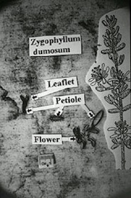

UV Image formation
How the Divine Mercy painting and the Shroud of Turin converge
(More details about the two images are included below)


The single most studied artifact in human history
The Shroud of Turin is an ancient linen cloth that bears the image of a crucified man who has been tortured by scourging and puncture wounds to the head. Millions believe it to be the burial cloth of Jesus.
Read more...Modern science has completed hundreds of thousands of hours of detailed study and intense research on the Shroud. According to Shroud.com,[1] the Shroud of Turin is, in fact, the single most studied artifact in human history, and we know more about it today than we ever have before. Shroud.com keeps the public abreast of current research, provides them with accurate data and lets you interact with the researchers themselves.
7 facts about the Shroud of Turin

3D Image formation

Sudarium correlation

Forensic Accuracy


“The perfect reproduction of the Turin Shroud remains a challenge since many other characteristics of the original image have not yet been obtained with any of the processes used for reproduction to date.”
“The ultraviolet light necessary to do so [reproduce the image] ‘exceeds the maximum power released by all ultraviolet light sources available today,’ says Di Lazzaro. It would require ‘pulses having durations shorter than one forty-billionth of a second, and intensities on the order of several billion watts.’”
To put that into perspective, this is what visible light radation of 750 million Watts look like:

“The visible image on the Shroud is probably not the result of a hot bas-relief impressed into cloth, but such a mechanism seems capable of accounting for the Shroud image's distance correlation, resolution, and similar chemical structure. It does not simultaneously account for (1) the 3-D image residing on one side of the Shroud, (2) observed lateral image distortions (consistent with a draping cloth over a body shape), or (3) expected thermal perturbations associated with physically thick superimposed blood images.”
The data from this study allowed the History Channel to model the 3D image recorded in a documentary[6]. The final result is shown below:

The Sudarium of Oviedo is the cloth that was wrapped on Jesus's head after his death while his body was still hanging on the cross, and it was removed before the body was wrapped in the Shroud for his burial. It is mentioed in the gospels in John 20:7.
“The very low concentration of strontium traces in the Sudarium matches also well with the type of limestone characteristic of the rock of Calvary in Jerusalem. This new finding adds to others recently released and it strengthens the tradition that both cloths have wrapped the body of Jesus of Nazareth.”
“From the Forensic Anthropology and Forensic Medicine point of view, all the information discovered by the scientific research is compatible with the hypothesis that the Shroud of Turin and the Sudarium of Oviedo covered the corpse of the same person.”

Mainstream media often quote the radio carbon dating test from 1988/1989 [9] which dated the cloth between A.D. 1260 and 1390 with 95% confidence. However this study has been refuted twice.
“In 1988, radiocarbon laboratories at Arizona, Cambridge, and Zurich determined the age of a sample from the Shroud of Turin. They reported that the date of the cloth’s production lay between A.D. 1260 and 1390 with 95% confidence. Pyrolysis-mass-spectrometry results from the sample area coupled with microscopic and microchemical observations prove that the radiocarbon sample was not part of the original cloth of the Shroud of Turin. The radiocarbon date was thus not valid for determining the true age of the Shroud.”
In 2013 a new-cyclic loads machine was built to measure the micro-mechanical properties (such as Young modulus and tensile strength) of flax fibres, which enabled scientists to determine the age of the Shroud using this method. [11]
“The machine has been used to date fibers coming from the Turin Shroud. These fibers furnish a rounded mechanical date of the TS (Turin Shroud) of 400 AD ±400 years at 95% confidence level that is compatible with the epoch in which Jesus Christ lived in Palestine.”
“This combination of blood and water would account for the stain on the front of the chest as well as the heavy stains which appear over the lower back.”
This account coincides with the gospel account, "But one of the soldiers pierced his side with a spear, and at once there came out blood and water" (John 19:34). Bucklin comments further:
“It is a scientific and objective presentation with no direct attempt at correlation between the Shroud imprints and New Testament accounts of the crucifixion of Christ. However, the author cannot help but comment that a remarkable consistency exists between the gospel accounts and the forensic pathological findings depicted on the Shroud of Turin.”

“As far as establishing the Shroud’s provenance, Zygophyllum dumosum is the most significant plant on the list. Max Frei identified pollen grains of this species on the adhesive tapes he examined. The northernmost extent of the distribution of this plant in the world coincides with the line between Jericho and the sea level marker on the road leading from Jerusalem to Jericho. As Zygophyllum dumosum grows only in Israel, Jordan and Sinai, its appearance helps to definitively limit the Shroud’s place of origin.”
A reference to this can be found in Marinelli, 2012. [15]
“In attempt to identify the kinds of things that might well be on the eyes of a dead man, we consulted Jewish burial customs prevalent at the time of Jesus and found that it was customary for the Jews to place objects (postherds-pottery fragments-or coins) over the eyes of their dead. The result of his [Ian Wilson's] study produced the possibility of a Jewish bronze lepton of Pontius Pilate minted from 29-31 AD.”
“Although the patterns in the right eye area of the Shroud image have a large random component, the enhancements suggest that there is some correspondence between them and those on a Pontious Pilate coin.”

The Divine Mercy painting by St. Faustina and Kazimirowski
In 1931 Jesus appeared to St. Faustina in a vision, clothed in a white garmet, His right hand raised in blessing and His left hand touching His garment, from where two large rays came forth, one red and the other pale. Jesus said to her, “Paint an image according to the pattern you see.”
Read more...As St. Faustina did not know how to paint, with the aid of her Spiritual Director she found and commissioned Kazimirowski Eugeniusz to paint the image who finished it in 1934. She meticulously instructed Kazimirowski to paint the vision that she had experienced of Jesus. The main objective behind this vision was for Jesus to remind the world through St. Faustina and this painting of his Divine Love and Mercy (hence, it's title - The Divine Mercy image), and to trust in him, as the famous title reads, "Jesu Ufam Tobie" (Jesus I Trust in You). This original painting can be found today in the Divine Mercy Chapel in Vilnius, Lithuania. In her visions she would sometimes even converse with Jesus. She recorded all her dialogues with Jesus in her diary.

Anthropologist Prof. Zbigniew Treppa explains the convergence phenomenon of the two images

Discover Jesus
Discover more about Jesus...“For God loved the world so much that he gave his one and only Son, so that everyone who believes in him will not perish but have eternal life.”